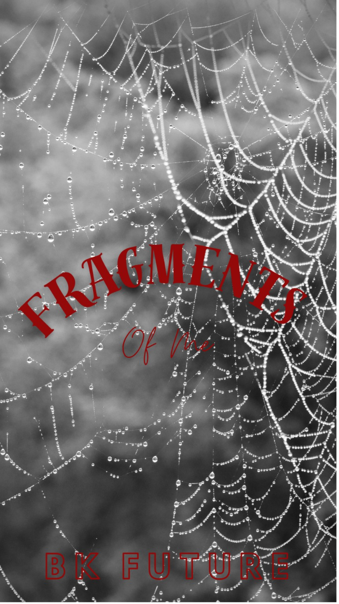

001

A sanctuary for the written word
The Literary World of BK FUTURE
A world of midnight thoughts, hidden secrets, haunting poetry, and fictional lives waiting to be discovered. Every story has a shadow. Every shadow has a story.
ENTER THE ARCHIVE ↓Behind the pages
Welcome to Nocturne's Archive, the literary world of BK FUTURE — a home for stories that explore the darker corners of imagination and the complicated nature of being human.
Here, secrets have consequences, characters carry histories of their own, and not every question has an easy answer. From dangerous fictional worlds to quiet moments of reflection, every work has a place within the Archive.
Browse the manuscripts, wander through the poetry, and discover the music behind the stories. There is always another page waiting to be turned.
The written collection
Six stories. Six different worlds. Countless secrets waiting between the lines.


No stories were found in the archive.
MANUSCRIPT 001
MAFIA • DARK FICTION
MATURE THEMES
She has spent years trying to bury the secrets that came with her past, hiding every skeleton behind the carefully pressed uniform of an ordinary life.
For a while, it works.
Until a certain Mafia heir walks into her world.
What begins as an unexpected intrusion threatens to unravel the life she's worked so hard to construct, forcing old secrets back into the light and bringing her dangerously close to a world she thought she'd left behind.
Because some secrets refuse to stay buried.
And some people have a way of finding exactly what you're trying to hide.
MANUSCRIPT 002
MAFIA • ROMANCE • DRAMA
MATURE THEMES
She had a normal life. At least, she thought she did.
Unlike her cousin, whose life had already become entangled with a dangerous world, she had managed to remain far from it—living quietly, loving quietly, and believing that her future belonged entirely to her.
Until a Mafia leader walks into her life.
Powerful. Ruthless. Untouchable. And far too interested in her.
He belongs to a world she was never meant to enter, while she is the last person he should ever want. Yet somehow, their paths become impossible to separate.
Because when a man accustomed to possessing everything decides that she belongs to him, walking away may no longer be an option.
MANUSCRIPT 003
MAFIA • MYSTERY • DRAMA
MATURE THEMES
She was the girl who found a family when she needed one most.
Welcomed into the home of three siblings after growing up in foster care, she slowly became part of something she had never truly believed she could have—a family.
The youngest becomes her responsibility.
The oldest becomes something far more complicated.
A brother. A best friend. A secret she refuses to name.
But lately, the oldest has become increasingly distant. Always busy. Always somewhere else. Always unavailable whenever she needs him most.
She tells herself there is a reasonable explanation.
There isn't.
When she finally discovers where he's been—and what he's been involved in—the truth is far darker than anything she could have imagined.
And suddenly, the person she thought was simply standing beside her... has been living an entirely different life.
MANUSCRIPT 004
GOTH • PUNK • DRAMA
MATURE THEMES
In their world, Goths and Punks don't mix.
The rules are simple. The lines are drawn. And if you're a Goth, you stay with the Goths.
She has spent years trying to earn her place among them. As a Raven chick, she's considered too inexperienced to be part of the inner circle—a position that comes with respect, belonging, and a voice within the Goth community. But she's determined to prove that she's more than the label they've given her.
Getting accepted into the Goth club would mean finally being seen as one of them.
So she's willing to do whatever it takes.
Then she meets him.
A Punk. The one person she knows she shouldn't be drawn to.
What begins as a complicated relationship quickly becomes something neither of them can neatly define. Because the more she tries to figure out what they are, the more complicated everything becomes.
Especially when she discovers that he's already tangled up with someone else.
Someone she knows.
Her best friend.
A Goth just like her.
In a world where choosing sides matters, falling for the wrong person could cost her the very acceptance she's spent years chasing.
So what are they?
Friends? A mistake? Something more?
Or just another secret waiting to tear the whole circle apart?
MANUSCRIPT 005
DRAMA • MYSTERY • ROMANCE
MATURE THEMES
They've been friends for as long as either of them can remember.
Two people who grew up side by side, carrying completely different kinds of pain.
She lives with an everlasting grief she has never quite learned how to put down.
He lives with the guilt of knowing he is somehow connected to it.
She has hopes for the future. A life she still wants to build despite everything she's lost.
He has secrets.
Secrets buried deep enough that he convinces himself they can stay there forever. Secrets she was never supposed to discover.
But secrets have a way of surfacing.
And whatever is done in the dark will eventually come into the light.
As the years of friendship begin to collide with feelings neither of them can ignore, the line between what they know about each other and what they've been hiding becomes dangerously thin.
Then one secret changes everything.
With every revelation comes another question. Every answer opens another wound. And the closer they get to the truth, the more they risk destroying the very bond that has kept them together for years.
Because sometimes the person who knows you best is also the person who has the most to hide.
And when the darkness finally comes to light...
will there be anything left to hold onto?
Be Mine.
MANUSCRIPT 006
FRIENDS TO LOVERS • DRAMA • FANTASY
MATURE THEMES
They were supposed to be best friends forever.
Nothing more.
At least, that's what they told themselves.
They grew up together, shared everything, and somehow always found their way back to each other—even when life gave them every reason not to.
But forever has never been as simple as it sounds.
There are exes who refuse to stay in the past, accidents that change everything, regrets that cannot be undone, and tragedies that leave scars neither of them knows how to carry.
Somewhere along the way, friendship becomes something neither of them can name without risking everything they've built.
And just when they think they've finally figured out where they stand, life pulls the ground from beneath them again.
Because sometimes love arrives too early.
Sometimes it arrives too late.
And sometimes, no matter how many times the world tries to separate two people, they keep finding their way back to one another.
Across distance.
Across time.
Across worlds.
Because some connections were never meant to end.
And maybe being best friends forever was never supposed to mean they would remain just friends.
Words after midnight
Poems written in the spaces between midnight thoughts, unspoken feelings, and the things we struggle to name.

POETRY COLLECTION • FRAGMENTS OF ME
One book. Many poems. Pieces of thought, feeling, memory, and becoming—gathered in one place.
Some feelings are too complicated for ordinary conversation. Some thoughts only make sense when they become words on a page.
This wing is dedicated to poetry about life, identity, love, loss, healing, darkness, and the small moments that leave a permanent mark.
"Not every silence is empty. Some are full of words."
The archive has a soundtrack
Every story has a soundtrack. These are the songs that belong to the moods, characters, and shadows of Nocturne's Archive.
The mind behind the manuscripts
Every fictional world begins somewhere. This is where the words find their way out.
WRITER • DREAMER • WORLD-BUILDER
A storyteller drawn to complicated characters, dark fictional worlds, unexpected truths, and the emotions that make a story linger.
Nocturne's Archive is a growing collection of novels, poetry, and ideas shaped by imagination. Every manuscript holds a different world, and every world has something left to reveal.
"Every story begins as a thought that refuses to leave."
Leave a message in the dark
Want to follow the stories, discover new writing, or keep up with the creator? Find BK FUTURE through the links below.
Some stories are shared in chapters. Others are written one midnight thought at a time.